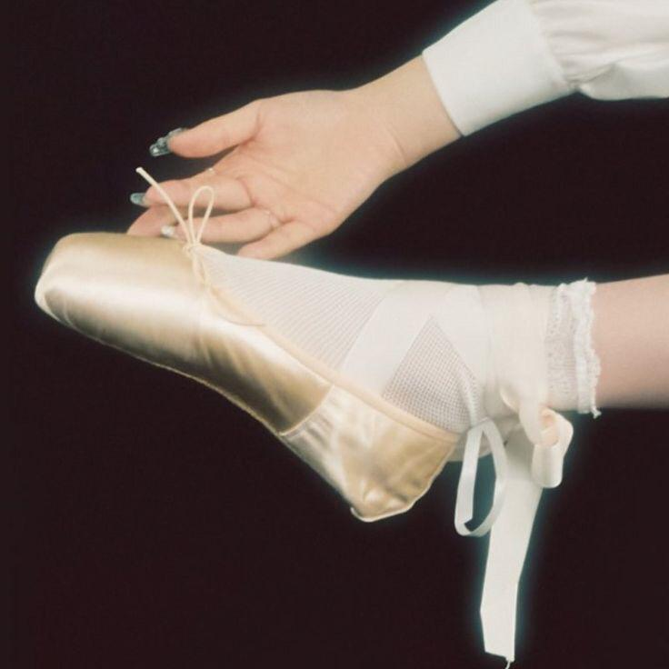

ABOUT : Feel My Rhythm
 |
Red Velvet's comeback with "Feel My Rhythm" combines elegance and magical elements, inspired by classical art. The song expresses freedom and beauty through music, featuring strong vocal harmonies and fantasy visuals. These elements create a captivating experience, inviting listeners to feel the magic of music. |
 |
|
|  | Red Velvet's comeback with "Feel My Rhythm" is inspired by classical art, particularly Baroque music and paintings. This classical influence is reflected in the elegant melodies and dramatic arrangements of the song. The central theme revolves around experiencing beauty and freedom through music. The visual concept also embodies a magical atmosphere that aligns with this inspiration, creating a touching and profound experience. |